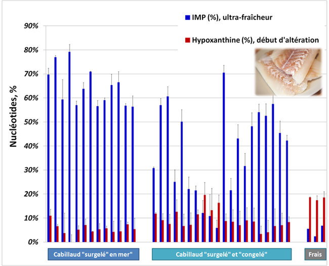
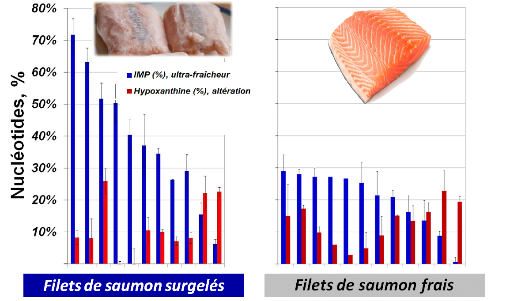
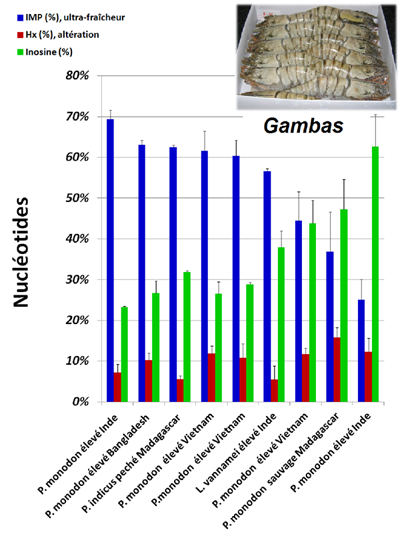
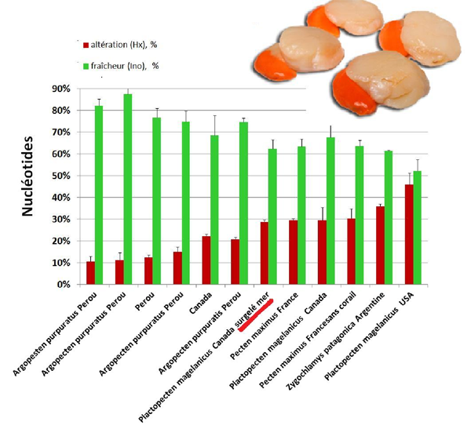
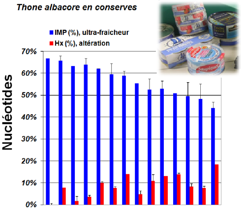

Mesurer les nucléotides pour garantir la fraîcheur Les poissons et autres produits de mer sont des produits hautement périssables. Leur qualité est une préoccupation majeure pour les industries de transformation de produits de la pêche. Tester la fraicheur de chair de poisson est la première étape importante dans la procédure industrielle du contrôle qualité. Bien que l'analyse sensorielle permette une évaluation rapide de la qualité du poisson frais entier, le contrôle de la qualité du poisson découpé surgelé ou des blocs de filets congelés reste plus difficile. Principales caractéristiques: Large gamme d’application • poissons, crustacés, mollusques ; Rapide
Prix
Precis
Simple
Téléchargement : | |||||||||||||||


Principe:
Les nucléotides, catabolites d'ATP, représentent des constituants les plus abondants retrouvés dans le muscle, après les acides aminés. Avec l'arrêt respiratoire, l'ATP musculaire se dégrade en quelques heures en l'IMP, le nucléotide responsable du goût recherché de poisson frais qui n’existe que dans les produits de la mer de première qualité. Pendant dix jours suivant l'abattage, l'IMP se dégrade en inosine, puis en hypoxanthine, ce dernier responsable de l’arrière-goût amer du poisson altéré (Schéma 1).
La possibilité d'utiliser des nucléotides pour mesurer la fraîcheur a été démontrée pour la première fois par des chercheurs japonais (Saito, T et al Nature, 1959), puis confirmée par de nombreuses travaux scientifiques. La dégradation de nucléotides par des enzymes de la chair dépend non seulement de la durée mais aussi de la température de conservation. Ainsi leur taux relatif reflète la fraîcheur globale d'un produit. Les processus tels que la congélation ou la cuisson inactivent les enzymes ce qui permet de connaître l'état de la fraîcheur au moment de la congélation ou cuisson.
Simple et rapide:

Réglementation
Aujourd'hui la mesure de nucléotides ne peut se substituer aux méthodes d'évaluation de la fraîcheur prévues par les règlements 853/2004 et 2074/2005 (évaluation organoleptique, ABVT). Cependant, le dosage de l'ABVT est difficilement interprétable pour des produits cuits ou ayant subi une transformation, poissons gras et poisson frais préemballé. Selon la note de service DGAL/SDSSA/N2013-8083 du 14 mai 2013 concernant la congélation des denrées alimentaire d'origine animale: "La congélation effectuée immédiatement après l'abattage limite la croissance des bactéries et par conséquent, la charge microbiologique lors de la décongélation... Cela suppose que la denrée doit être soumise à la congélation:
- "rapidement" pour les poissons dans les navires congélateurs;
- "le plus rapidement possible" pour les produits de la pêche séparés mécaniquement… Il est par conséquent de la responsabilité de l'opérateur de congélation de veiller à la fraîcheur des denrées soumises à congélation".
| Exemples : Ultra-fraîcheur de cabillaud "surgelé en mer": La dégradation de l'IMP est rélativement rapide dans la chair de cabillaud - l'IMP est totalement dégradé au bout de seulement 4 jours de conservation à 3°C (Gill et al, 1990). Ceci fait de l'IMP un excellent indicateur d'ultra-fraicheur permettant de vérifier la haute qualité de cabillaud surgelé en mer. Selon l'analyse de 13 cabillauds surgelés bord/en mer effectués avec "PRECICE® Freshness Assay" Kit , leur teneur en IMP est très haut (64.4±7.9%) en comparaison avec le cabillaud surgelé/congelé sans cette appellation (38.2±8.7% de moyenne, 20 échantillons). |
|  |
| Fraîcheur de filets de saumon: A la différence du cabillaud, la dégradation de l'IMP est beaucoup plus lent dans la chair du saumon, une perte de 67% de l'IMP a été observé au bout de 2 semaines (Erikson U. et al 1997). Il a été proposé alors de fixer à 20-30% de l'IMP le seuil de rejet de saumon et de définir le saumon ayant >60% de l'IMP comme "excellente". Selon nos résultats, la teneur moyenne en IMP de filets de saumon vendus surgelés ou frais en France est de 38,7% et de 22,2%, respectivement (22 échantillons). |
 |
| Fraîcheur de gambas crues surgelées: Selon de nombreuses publications, le processus de d�gradation de l'ATP dans la chair de crustac�s est proche de celui de poisson (Kalleda, R et al 2013, Goncalves et al 2003,�Jinag et Lee, 1988,�Konosu & Yamagushi 1998). Les crevettes tropicales (gambas) sont devenues tr�s populaires du fait essentiellement d�une d�mocratisation du prix suite � leur �levage en Asie, en Inde et en Am�rique du Sud. Comme les autres crevettes, les gambas sont des produits tr�s fragiles, notamment, � cause de pr�sence de visc�res. Leur qualit�et la fra�cheur d�pend de conditions de la p�che, de la vitesse du refroidissement et de la dur�e de transport. La figure (� gauche) montre que 2 �chantillons de gambas sur 9 pr�lev�s en commerce pr�sentent la teneur en IMP de 36,9% et 25,1% (produit sauvage et marque "discount") significativement en dessous de moyenne de 53,3%. Ces r�sultats montrent �galement que chez les crustac�s l'inosine�pourrait constituer un meilleur indicateur de phases pr�coces de l'alt�ration que l'hypoxanthine.
|
 |
| Fraîcheur de Noix de Saint Jacques surgelées: La chair de mollusques est dépourvue d'enzyme AMP-déaminase permettant la conversion rapide de l'AMP en IMP. Par conséquent, la dégradation de l'ATP passe non par la formation de l'IMP mais par celle de l'adénosine qui est dégradé en inosine, puis hypoxanthine (Saito et al Nature 1958). Ainsi, pour les mollusques, l'accumulation de l'hypoxanthine est considérée comme indicateur de perte de la fraicheur alors que le taux de l'inosine indique la fraîcheur préservée. L'analyse de 12 échantillons de noix de Saint Jacques commercialisées surgelées a démontré que leur teneur en hypoxanthine varie de 10,5% à 45,9%. Contrairement aux résultats obtenus avec les cabillauds "surgelés bord", les noix de Saint-Jacques "surgelées en mer" ne présente pas la fraîcheur exceptionnelle jugé par le taux de l'hypoxanthine de 28.7%. |
 |
Conserves de thon albacore: La cuissons inactive les enzymes de la chair et arrête tous les processus de dégradation. Les nucléotides sont des composés résistants à la chaleur, ainsi, leur taux reflète la fraîcheur de thon lors de sa cuisson. Selon nos résultats, la teneur en IMP de thon albacore en boite varie de 39,5% à 66,8%. Cet analyse permet de mettre en valeur des produits de haute gamme (IMP >60%) et aussi identifier les produits ayant <45-50% de l'IMP et, par conséquent, présentant le risque accru de la présence de l'histamine.
|
 |